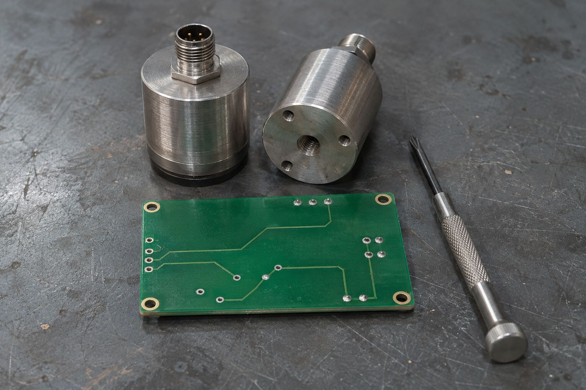

NQ-O SERIES
광학 센서
빛의 반사를 이용한 부품 유무·위치 감지 개념입니다.
PRODUCTS & TECHNOLOGY
아래 제품명과 수치는 구성 예시입니다. 실제 제품·판매·성능 보증은 제공하지 않습니다.

3개 제품군
NQ-O SERIES
빛의 반사를 이용한 부품 유무·위치 감지 개념입니다.
NQ-D SERIES
대상과 설비의 간격을 확인하는 거리 감지 개념입니다.
NQ-L SERIES
센서 신호를 설비의 인터페이스에 연결하는 개념입니다.
정확한 적용 여부는 대상·거리·조도·설치 조건별 검증이 필요하다는 가정의 화면입니다.